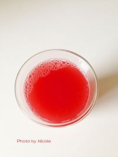

<style>
/* custom */
section[data-id="5"] {
    /*background-color: #3498db;*/
}
section[data-id="6"] .box1 {
    left: 22px; top: 108px;
}
section[data-id="6"] .box2 {
    left: 256px; top: 82px;
}
section[data-id="6"] .box3 {
    left: 257px; top: 164px;
}
section[data-id="6"] .box3 p{
    width: 20px;
    position: absolute;
}
section[data-id="6"] .box3 .part1{
    /*left: 244px; top: 183px;*/
}
section[data-id="6"] .box3 .part2{
    left: 34px; top: 15px;
}
</style>

<!-- 第六屏 -->
<voice-pig id="voice-6" text="part6:西瓜榨汁，再过滤一遍" onplay="" onplaying="" onstop="window.goNext()"></voice-pig>
<section class="page">
    <div class="box1 animated fadeInDown">
        
    </div>
    <div class="box2 animated fadeInUp">
        <i>6</i>
    </div>
    <div class="box3 animated fadeInLeft">
        <p>西瓜榨汁，再过滤一遍</p>
    </div>
</section>
